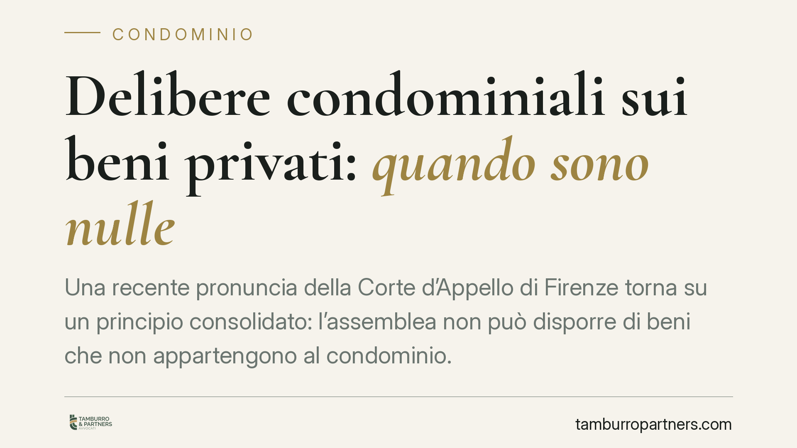

Delibere condominiali sui beni privati: quando sono nulle
Una recente pronuncia della Corte d'Appello di Firenze torna su un principio consolidato: l'assemblea non può disporre di beni che non appartengono al condominio. Se la delibera impone lavori o spese su porzioni di proprietà esclusiva senza il consenso dei titolari, è radicalmente nulla. La decisione chiarisce anche i requisiti minimi della domanda di mediazione.

Il caso
La Corte d'Appello di Firenze ha ribadito un limite invalicabile del potere assembleare: l'assemblea condominiale delibera sulle parti comuni e sulla loro gestione, non sui beni di proprietà esclusiva dei singoli. Quando una delibera impone a un condomino di eseguire lavori sul proprio bene privato, o di sostenerne le spese, senza il suo consenso, la decisione non è semplicemente irregolare: è nulla.
La pronuncia va letta con una precisazione. Gli estremi esatti della sentenza (numero e anno) andrebbero verificati sulla fonte ufficiale prima di ogni citazione formale: alcune trascrizioni riportano un anno anomalo. Il principio di diritto, tuttavia, è pacifico e prescinde dal singolo provvedimento.
Inquadramento normativo
Il fondamento della nullità non è tanto l'art. 1126 c.c. — che disciplina il riparto delle spese per i lastrici solari a uso esclusivo — quanto l'art. 1418 c.c., che sancisce la nullità del contratto (e, per estensione, dell'atto collegiale) quando l'oggetto è giuridicamente impossibile. L'assemblea non ha il potere di disporre di diritti altrui: incidere su un bene di proprietà esclusiva senza il consenso del titolare significa deliberare su un oggetto che esula dalla competenza dell'organo.
La distinzione tra nullità e annullabilità delle delibere è stata fissata dalle Sezioni Unite (Cass. SU n. 4806/2005). Sono nulle le delibere prive degli elementi essenziali, con oggetto impossibile o illecito, o che incidono su diritti individuali sulle cose comuni o di proprietà esclusiva. Sono annullabili quelle affette da vizi meno gravi (difetti di convocazione, irregolarità procedurali, violazioni di legge o di regolamento).
La differenza ha conseguenze pratiche decisive sui termini. La delibera annullabile va impugnata entro trenta giorni ex art. 1137 c.c.: termine che decorre dalla comunicazione del verbale per i condomini assenti e dalla deliberazione per i dissenzienti. La delibera nulla, invece, può essere fatta valere da chiunque vi abbia interesse, senza limiti di tempo.
Mediazione obbligatoria
La Corte è intervenuta anche sui requisiti minimi della domanda di mediazione, condizione di procedibilità nelle controversie condominiali (art. 5 d.lgs. 28/2010). La domanda deve individuare con sufficiente precisione le parti, l'oggetto e le ragioni della pretesa. Una domanda generica o incompleta non integra validamente la condizione di procedibilità e può esporre l'azione al rischio di improcedibilità.
Implicazioni pratiche
Per il proprietario esclusivo. Una delibera che impone lavori o spese sul suo bene privato senza consenso può essere contestata anche oltre i trenta giorni, trattandosi di nullità. Non c'è decadenza, ma resta consigliabile agire tempestivamente per evitare l'esecuzione della decisione e il consolidarsi di situazioni di fatto.
Per l'amministratore. Portare all'ordine del giorno decisioni che incidono su beni di proprietà esclusiva espone la delibera al rischio di nullità e il condominio a un contenzioso. L'amministratore dovrebbe verificare in via preventiva la natura del bene interessato e acquisire il consenso scritto dei titolari.
Per l'assemblea. Il potere deliberativo trova un confine netto nella proprietà altrui. Le maggioranze, per quanto ampie, non possono superarlo: nessun quorum sana l'impossibilità giuridica dell'oggetto.
Cosa fare in concreto
- Verificare, prima della delibera, se l'intervento riguarda parti comuni o beni di proprietà esclusiva.
- Acquisire il consenso scritto dei proprietari interessati quando la decisione incide sui loro beni privati.
- Distinguere subito tra vizio di nullità e di annullabilità: nel secondo caso il termine di trenta giorni è perentorio e decorre dalla comunicazione del verbale (assenti) o dalla deliberazione (dissenzienti).
- Curare la domanda di mediazione indicando con precisione parti, oggetto e ragioni della pretesa.
- È opportuna una verifica preventiva dell'ordine del giorno e dei presupposti di validità prima dell'assemblea.
---
Contributo informativo a cura di Tamburro & Partners Avvocati. Non costituisce parere legale.
Ogni condominio ha una storia a sé.
Se gestisci un'amministrazione e vuoi un confronto su una specifica questione condominiale, scrivi allo studio. Ti rispondiamo entro un giorno lavorativo.